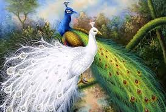

National Bird
- Common Name : Indian Peafoul
- Scientific Name : Pavo cristatus
- Adopted in : 1963
- Found in : Indigenous to India, Nepal, Bangladesh, Myanmar, Sri Lanka but has been introduced all over the world
- Habitat : Grasslands, forests, near human habitats
- Eating Habits : Omnivorous
- Average Weight : Male – 5 Kg; Female – 3.5 Kg
- Average Length : Male – 1.95 to 2.25 m; Female -upto0.95 m
- Average Wingspan : 1.8 m
- Average Lifespan : 15-20 years in wild
- Average Speed : 13 km/h
- Conservation Status : Least Concern (IUCN Red List)
The national bird of a country is a designated representative of that country’s fauna. It is chosen on the basis of the unique qualities that the bird may symbolize. It should uphold certain core qualities or values of the nation it belongs to. The national bird should be a prominent feature in the cultural history of the country. Another point in favor of being chosen as the national bird is the beauty that it embodies. The indigenous nature of the bird is another point while it is being considered as the national bird. Being designated as a national symbol affords the bird a special status with increased awareness and dedicated conservation efforts
National bird of India is the Indian Peafowl commonly termed as a Peacock. Vividly colorful and exuding oodles of grace, the Indian Peafowl commands a lot of attention. The peacock and its colors are synonymous with Indian identity. It is indigenous to India and Sri Lanka, but now features in countries all over the world. Peacocks are sometimes domesticated and kept in the garden for aesthetic purposes.
Scientific Classification
- Kingdom : Animalia
- Phylum : Chordata
- Class : Aves
- Order : Galliformes
- Family : Phasianidae
- Subfamily : Phasianinae
- Genus : Pavo
- Species : Pavo cristatus
Distribution
Indian peafowls were initially indigenous to the Indian Subcontinent – currently India, Nepal, Bhutan, Pakistan, Bangladesh, Myanmar and Sri Lanka. It has been introduced to other parts of the world over the ages including Europe and America. Semi-wild populations occur in Australia, New Zealand and even in the Bahamas.
Habitat
They are found in low altitude areas, generally below 1800 meters from the sea-level. In the wild, they inhabit a wide range of habitats ranging from semi-dry grasslands to moist deciduous forests.They prefer to live near water-bodies. They also live around areas of human habitation, near farms, villages and often in urban areas. They forage and nest on the ground but roost on trees tops.
Physical Traits
The males of the species, also known as peacocks, present a strikingly beautiful appearance that is well-appreciated throughout the world. They can grow to a length of 195 to 225 cm from tip of the beak to the end of the train and weigh an average of 5 Kg. The peacock’s head, neck and breast are iridescent blue in color. They have patches of white around the eyes. They have a crest of upright feathers on top of the head which are short and tipped with blue feathers. The most notable feature in the peacock is the extravagantly beautiful tail, which is also known as the train. The train is fully developed only after 4 years of hatching. These 200 odd display feathers grow from the back of the bird and is part of enormously elongated upper tail coverts. The train feathers are modified so that they do not have the barbs that hold the feathers in place and are therefore associated loosely. The colors are a result of elaborate microstructures that produce a sort of optical phenomena. Each train feather ends in an oval cluster bearing an eyespot or ocellus that is extremely eye-catching. The back wings are greyish brown in color, and are short and dull. The Indian Peacock’s thighs are buff colored and they have a spur on the leg above the hind.
The female peafowl or peahen lacks the flamboyant colors altogether. They predominantly have brownish grey coloring, and sometimes have a crest similar to the peacock but brown in color. They totally lack the elaborate train and have dark brown tail feathers. They have whitish face and throat, brown hind neck and back, a white belly and a metallic green upper breast. The Peahens grow upto a length of 0.95 m and weigh somewhere between 2.75 to 4 Kg. There is some color variation found in Indian Peafowl species. The black-shouldered variation results from a mutation resulting from genetic variation within the population. Mutation in the genes producing melanin, results in white peafowls that have starkly white feathers with cream and brownish markings.
Behavior
The Indian peafowls are best known for the beautifully elegant display of feathers the evolution of which is believed to be driven by sexual selection. The peacocks spread their train in the shape of a fan and quiver them during the courtship display. It is believed that the number of eyespots in a male’s courtship display determines his success in mating. Peafowls are omnivorous in their feeding habit and survive on insects, seeds, fruits and even small mammals. They forage on the ground in small groups which has a single male and 3-5 females. They roost as a group as well on the upper branches of a tall tree to escape predators. When agitated they will prefer to flee by running, rarely opting to take a flight. The males are surprisingly agile on foot despite the long train.
The Indian peafowls do not have any specific breeding season and mating is generally dependent on rain. In south India, they mate during January to March, while in northern parts of the country they mate during late July to September. The males occupy small territories and females visit these territories assessing the suitability of the males for mating. Eligible males are surrounded by females who take turns to mate following repeated courtship display by the males. The call of the Indian peafowl is a loud, trumpet-like scream “kee-ow”. It commonly advertises the presence of the male during the breeding season, but also heard in the late afternoon and after dark, possibly as a warning against predators.
Life Cycle
The peacocks are polygamous in nature. The peahen lays around 4-6 eggs in the ground, preferably in a shallow hole and incubate these for 28-30 days. The chicks are reared by the mother for about 7-9 weeks by feeding food from the mother’s beak. The mother peahen then travels around with the chicks in tow and possibly teaches them to forage. The male and female chicks are indistinguishable initially. The males start to develop the distinctive plumage from two years of age and they mature at around four years. The average lifespan of the Indian peafowls in the wild is 15 years.
 +91 9917078188
+91 9917078188 mohitpratap51@gmail.com
mohitpratap51@gmail.com www.IndianCulture.com
www.IndianCulture.com